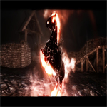
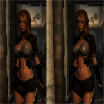

Présentation de la confrérie
Points forts
Galerie Photos
Menu Principal
La Confrerie des Traducteurs vous accueille !
Ce site est une plateforme de téléchargement indispensable pour les fans de mod des jeux Bethesda !
Points forts
Pouvoir télécharger du contenue gratuitement en ficher .Zip
La mise à jour du site optimisé
Pouvoir zoomé et dézoomé à volonté sur les images des différents contenue
Galerie Photos

